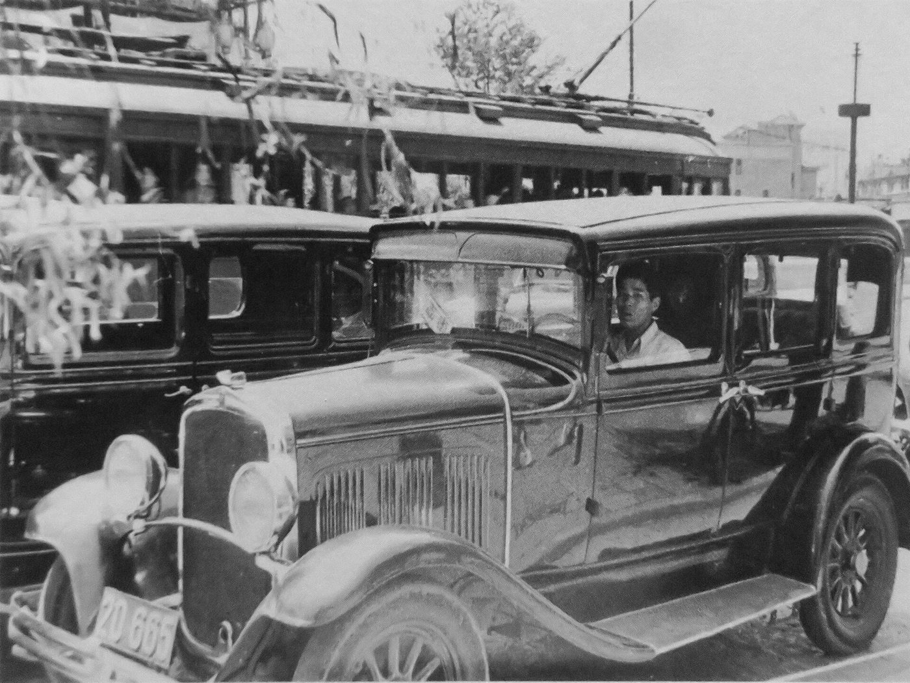

スパイラルダイナミクス › 5 / 10
橙の段階
一度きりの人生なら、来世のために我慢するより、いま成功し、豊かになり、楽しむほうが理にかなっている。科学、自由、競争、進歩、自己啓発。文明を宗教から切り離し、中産階級を生み、いまの世界の文化に最も大きな影響を持つとされる段階です。何を大事にし、どこに現れ、行きすぎるとどう見えるか。いまの自分の中の橙、次の段階への壁、そして日本の高度経済成長と「モーレツ社員」との重なり。

もし人生が一度きりなら、来世のために自分を抑えて尽くすより、いま、この世で成功し、豊かになり、楽しむほうが理にかなっている。神の言葉より、自分の目で確かめたことを信じる。身分や血筋より、腕と実績。この理論が「橙」と呼ぶのは、そういう価値観のまとまりです。ひとことでいえば、個人の達成の段階で、いまの先進国に住む人の多くが、ここに重心を置いていると考えられています。
読む前に、序論の注意を繰り返します。段階は格付けではありません。橙は「浅い人」の色ではなく、宗教と身分が人を縛っていた時代に、人の心が出した答えの形です。橙の人の大半は、健全な競争心と起業家精神を持ち、自立を望む、まっとうで親切な人たちです。そして、この理論を読む人の多くは、自分の中に橙が大きくあることに、読みながら気づくことになります。
どんな段階か
橙は、その前の段階「青」の限界から生まれます。青は、ひとつの正しい道が聖典や伝統に書かれていると信じる段階です。けれど、青を突き詰めていくと、ある瞬間に気づきが来ます。自分が確信していた絶対の真理は、それほど確かではないかもしれない。世界は白黒ではなく、灰色があるかもしれない。聖典を書いた人も、権威の座にいる人も、すべてを知っていたわけではないかもしれない。そこから、権威に従うのではなく、自分で調べて確かめる方向へ、心が動きます。歴史でいえば科学革命、それに続く産業革命がこれにあたります。
科学が発見を重ね、技術が暮らしを変えると、宗教の確信は崩れ、人々は教会と国家を分けることを望むようになります。宗教は教会の中に、教育は事実の上に、という分け方です。青が来世のために自分を犠牲にしていたのに対し、橙はこう考えます。来世があるかどうかは、誰にも分からない。なら、この人生で、いま、できるだけの成功と幸福を得るのが、いちばん合理的だ。
橙が大事にするものは、長い一覧になります。達成、成功、卓越。一番になること。効率、進歩、生産性、最適化。行動と結果と実用。終わりのない成長。競争、勤勉、ビジネス、起業。技能、知識、学歴、資格。自信、楽観、カリスマ。自由、自立、自己責任。金、贅沢、外見、若さ。ブランド、消費、流行。そして自己啓発。青では宗教が担っていた「どう生きるべきか」を、橙は世俗の言葉で言い直します。神の名を出さずに、どう栄えるか、どう上に登るかを説く本や講座は、橙の産物です。
橙を青から分けるいちばん大きな線は、合理性、論理、科学、世俗主義です。信仰と服従から、振り子は反対側へ振れます。自分の頭で考え、証拠を求め、懐疑をあらゆるものに向ける。ただし、その懐疑は、橙自身と、懐疑そのものと、科学には向けられません。橙にとって、人の地位は身分や血筋ではなく、能力で決まります。
この理論がとくに強調するのは、橙にも形而上学がある、という点です。橙は「形而上学は宗教のたわごとだ」と言いますが、橙自身も、ひとつの世界像を信じています。物質があり、そこから複雑なものが進化し、脳ができ、脳から意識が出た。それがすべてで、それ以外はない。神も来世もなく、意識は神経の働きにすぎず、現実は冷たく、非人格的で、人のことを気にかけていない。橙はこれを形而上学とは思わず、ただの事実だと思っています。量で測れないものは存在しない、知能は検査で測れる分だけが知能だ、という考え方も、ここから来ます。これが橙の自己盲点とされるものです。
どこに現れるか
橙の例は、数え切れないほど挙げられます。橙は狭い型ではなく、青寄りの橙から緑寄りの橙まで、幅があるからです。よく挙げられるものを、種類で示します。
・金融街、企業の役員室、法律事務所、経営学の大学院、コンサルタント、広告業界。大企業の文化の多くは橙です
・起業家、ベンチャー投資、「金持ちになる方法」を売る講師たち。橙の自己啓発は、市場をどう動かして自分の地位を上げるか、という話に集中します
・プロスポーツ、高級品、美容産業、外見と魅力を競う世界。体を鍛え、健康な食事をし、自分を磨くことも、それが自分の達成の追求である限り、橙です
・そして、科学を宗教にした人たち。宗教を叩くのは簡単なことで、橙はそこに安住しやすい、という指摘があります。経験主義と合理性の限界の中に迷い込んでいる、というのが、この理論の側からの見方です
・宗教と金が結びついた形もあります。信じれば豊かになる、と説く教えです。青の思想と橙の金銭が組み合わさると、市場が報酬をくれることが、思想が正しい証拠に見えてしまいます
・日本からの例として、過労死という言葉が、そのまま日本語で挙げられることがあります。橙が極端に行くと起きること、として
世界の大人のうち橙に重心を置く人は少数派ですが、文化的な影響力では最も大きい、という推計があります（この理論の側の推計で、学術的な統計ではありません）。ビジネス、科学、政治、そしてとくにメディア、映画、ゲーム、音楽を通して、世界中の人が橙の価値体系に染められている、というのがその見方です。橙の政治の形は、技術官僚制、資本主義、企業国家です。
いまの自分の中にあるもの
この段階は、遠くの経営者の話ではありません。橙の説明は、魚に水を指さすようなものです。橙に深く染まった人は、自分が橙だと知らず、それが現実そのものだと思っています。自分の中の橙を見るための手がかりを、三つ引きます。
宗教、神、創造論、神話、迷信。この分野で語られるものすべて。神秘主義、代替医療、チャクラ、輪廻、オーラ、前世、占星術。哲学と形而上学は、空論で、経験に基づいていないから。集団のための配慮は、独立心を邪魔するから。規制、役所の手続き、大きな政府、福祉。働かない人、ただ乗りをする人。路上の人を見て、緑なら共感が動くところで、橙は裁きが動きます。感情、直観、愛といった「ふわふわしたもの」。要点までが長い話。戦略も展望もない状態。平均より上を目指さない人。
欲は善だ。とにかくやれ。空が限界だ。何としても勝て。適者生存。虎穴に入らずんば虎子を得ず。自分の面倒は自分で見ろ。甘えるな。自分の力で這い上がれ。人はみな自分のために。こうした言葉を聞いて、背筋が伸びるか、少し疲れるか。それが自分の中の橙の量の目安になります。
健全な橙は、青からの大きな一歩です。健全な競争心、起業家精神、自立、技能を学ぶこと、経済的な独立、科学と理性に心を開くこと。中産階級と知識労働は、橙とともに生まれました。青の大聖堂が、橙の役員室に置き換わった、という言い方があります。
行きすぎると、環境の破壊が起きます。終わりのない成長を前提にした経済は、人口が増え続けたときどうなるのか、という問いを、橙は否認します。科学が新しい宗教になる「科学主義」。研究を都合よく引くこと。会社による抑圧、略奪的な融資、搾取的な労働、格差。人を取引として扱い、関係を弱みと見なして、必要なものを取ったら早く切り上げること。強がる男らしさの裏にある不安。そして、成功の果てにある空虚。欲しかったものを全部手に入れた翌日が、人生でいちばん憂鬱な日になる。全部手に入れて、ほとんど何も変わらなかったと分かるからです。そこで人は二つの道のどちらかを選びます。ひとつは絶望。もうひとつは、心と人とのつながりに戻る次の段階です。
次の段階への壁
次の段階は「緑」で、共感、平等、共同体、環境、心のつながりを大事にする段階です。橙から見ると、緑は感傷的で、怠け者で、非現実的に見えます。ここに、橙の壁があります。緑を悪者にし、ばかにする言葉を、橙は毎日浴びています。けれど、悪者にしたものに、人はなれません。自分がそれになったら、自分を悪者にすることになるからです。
・橙の限界について、深く読む。資本主義の限界、環境への損害
・緑について読み、緑を裁くのをやめる。裁きは、どの段階にとっても一番の罠で、次の段階への学びを閉ざします
・「私の成功の代価は何だったか」と自分に問う。成功と幸福は同じものではないと気づく。達成するたびに、心は新しい目標を作り、その競走にゴールはありません。技術も幸福をくれません。画面がどれほど高精細になっても、心はすぐ慣れます（快楽への順応）
・自分が共同体の一部だと認める。自律した個人という理想は、共同体と文化と教育のおかげで、はじめて成り立っています
・宗教の教義と、精神性を分けて、後者をまじめに学ぶ
・働きすぎをやめる。関係を深める。要らないものを買わない。持ち物を維持し、失い、壊れ、そのためにまた働く、という循環が、ストレスを増やしています。生活を簡単にする
・自然と動物に戻る。森で何日か、何もしないで座る
・分析と数量化の限界を認める。全体は部分の和より大きいと気づく。支配と操作と、仕組みの裏をかくことを手放す
・自分の感情、直観、女性的な側面とつながる。もっと泣く。心から話す
・そして、どの段階にも共通する鍵として、座って、考え、書き、自分の行いを振り返ること。橙は、植えつけられた心の型で、それ以上のものではありません。青の原理主義者が型を演じているのと同じように、橙も世俗の型を演じています。それを見るには、ひとりで座って、染み込むまで考えるしかありません
越え方の一覧に幻覚剤を入れる語り方もありますが、ここでは引きません。それらは日本では違法で、危険なもので、この理論の本来の内容でもありません。最後に念を押しておきたいのは、緑へ移ることは、成功と金を手放すことではない、ということです。緑は橙の上に積み重なります。段階は置き換わるのではなく、積み上がるものです。
日本語では
日本には、橙の価値観が国の目標だった時期があります。
実質の経済成長率が年平均で一割前後だった約十九年間です。1956年の経済白書は「もはや戦後ではない」と宣言し、1960年の所得倍増計画は、十年で国民総生産を二倍にし、西欧並みの生活水準と完全雇用を目標に掲げました。テレビ、洗濯機、冷蔵庫が「三種の神器」と呼ばれて家庭に広がり、「大きいことは良いことだ」が流行語になった時代です。海外はこれを「東洋の奇跡」と呼び、日本を手本にする国が現れました。この理論の言葉で言えば、国の重心が、家と身分の青から、成長と豊かさの橙へ動いた時代です。
自分の身も家庭も顧みず、会社の命令のままに働く姿を、戦場の兵隊にたとえて「企業戦士」と呼び、1968年ごろから石油会社の広告の言葉にちなんで「モーレツ社員」と呼びました。1980年代末には栄養剤の広告の「24時間戦えますか」が流行語になり、1979年には欧州共同体の報告書が日本を「仕事中毒者の国」と評しています。
興味深いのは、その反動が、同じ時期にすでに始まっていることです。1970年には「モーレツからビューティフルへ」という広告が出て、人間性の回復が語られ、1972年には「自己啓発のための生涯学習」が提言されています。バブルの崩壊後、会社のためにすべてを犠牲にしても賃金は上がらず、忠誠を尽くした従業員が整理解雇に遭い、過労死が認知され、働き方が問い直されました。「成功の代価は何だったか」という橙の壁の問いは、この五十年の日本が、国ぐるみで通った問いです。
出典・参考
- Actualized.org, Spiral Dynamics - Stage Orange（YouTube）段階の本質、価値の一覧、生まれる条件、例、暗黙の形而上学、行きすぎ、引き金、次へ進む方法。引用は自動生成の字幕による
- Spiral Dynamics（英語版ウィキペディア）段階は生活の条件への答えであり、それ自体として良くも悪くもないという理論の立場
- 高度経済成長（ウィキペディア）1955年ごろから1973年ごろ、年平均10%前後の成長、所得倍増計画、三種の神器、「大きいことは良いことだ」
- 企業戦士（ウィキペディア）モーレツ社員、「モーレツからビューティフルへ」（1970年）、「24時間戦えますか」、過労死